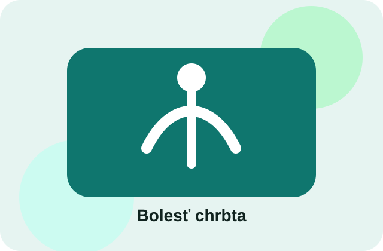
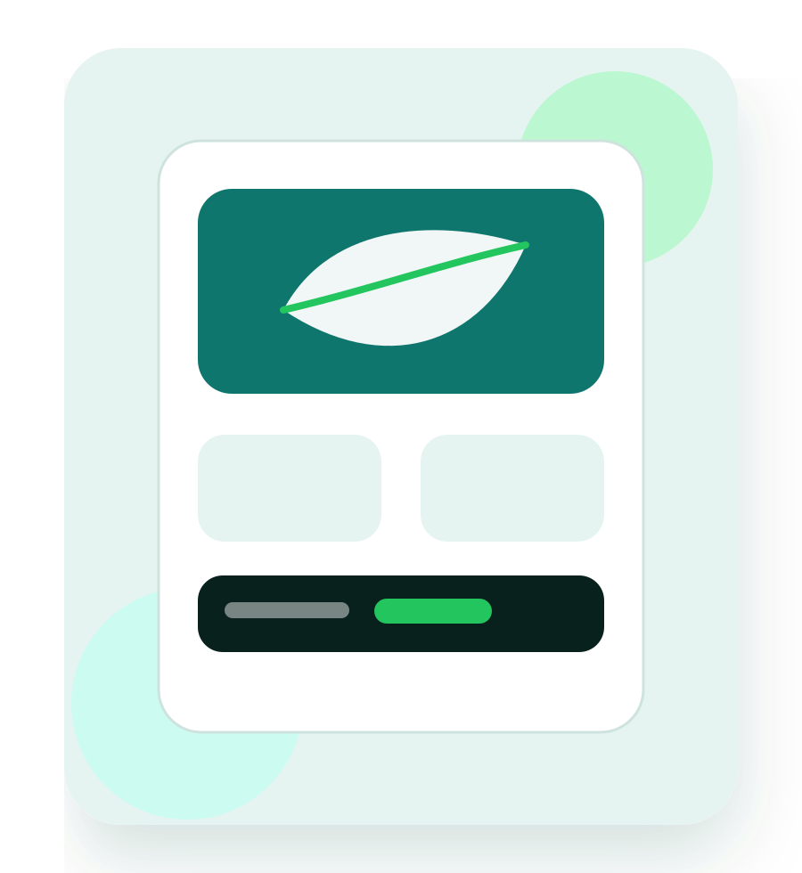
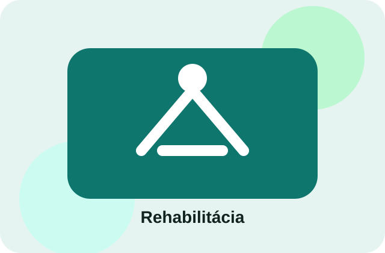
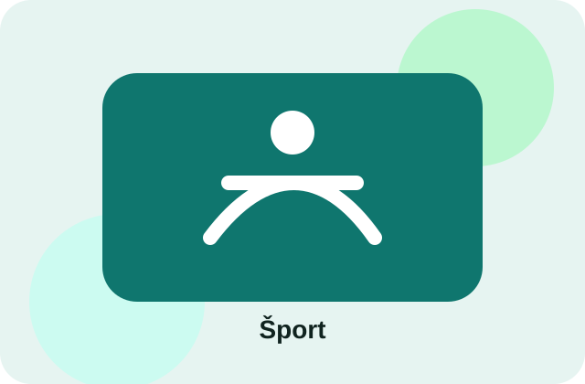
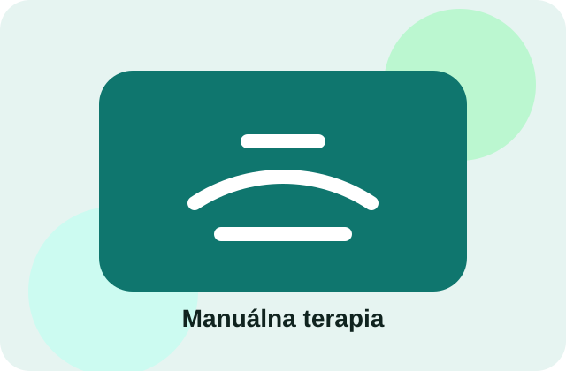

Bolesť chrbta a krku
Vyšetrenie pohybu, uvoľnenie preťažených oblastí a odporúčanie cvičení na doma.
Fyzioterapia • rehabilitácia • pohyb
MotionCare Fyzio je moderné fyzioterapeutické štúdio zamerané na bolesť chrbta, rehabilitáciu po zranení, športovú starostlivosť a prevenciu pohybových problémov.

Služby
Každá návšteva začína krátkym rozhovorom a pohybovým vyšetrením. Cieľom je pochopiť príčinu problému a nastaviť postup, ktorý dáva zmysel.

Vyšetrenie pohybu, uvoľnenie preťažených oblastí a odporúčanie cvičení na doma.

Postupný návrat k pohybu po úraze, operácii alebo dlhšom preťažení.

Regenerácia, prevencia zranení a riešenie bolestí vzniknutých pri športe.

Uvoľnenie svalového napätia, mobilizácia a jemné techniky podľa potreby klienta.
Ako prebieha návšteva
Fyzioterapia nie je len rýchle uvoľnenie bolesti. Dôležité je zistiť, čo bolesť spôsobuje, ako sa telo hýbe a čo treba zmeniť, aby sa problém nevracal.
Prejdeme si bolesť, obmedzenia, pohyb a vaše ciele.
Skontrolujeme rozsah pohybu, držanie tela a zaťaženie.
Nastavíme vhodný postup, terapiu a jednoduché cvičenia.
Dostanete jasné kroky, čo robiť medzi návštevami.
Cenník
Cena závisí od typu návštevy a rozsahu terapie. Pri rezervácii si vyberiete vhodný typ termínu.
od 45 €
Prvá návšteva, pohybové vyšetrenie a návrh ďalšieho postupu.
od 39 €
Individuálna terapia, cvičenie a odporúčania podľa aktuálneho problému.
od 35 €
Regenerácia, uvoľnenie preťažených svalov a podpora výkonu.
Online rezervácia
Rezervačný systém umožní vybrať službu, čas a odoslať rezerváciu online. Po vytvorení reálneho Bookio účtu sa sem vloží konkrétny rezervačný link.
Kliknutím otvoríte rezervačnú stránku. V deme je použitý placeholder link, ktorý sa pri klientovi nahradí reálnym Bookio odkazom.
Otvoriť BookioMám otázkuKontakt
Máte otázku pred prvou návštevou? Kontaktujte nás telefonicky, emailom alebo cez formulár. Termín si môžete rezervovať aj online.
Email: info@motioncare.sk
Telefón: +421 900 123 456
Adresa: Vajnorská 68, Bratislava
Otváracie hodiny: Po–Pi 8:00–18:00